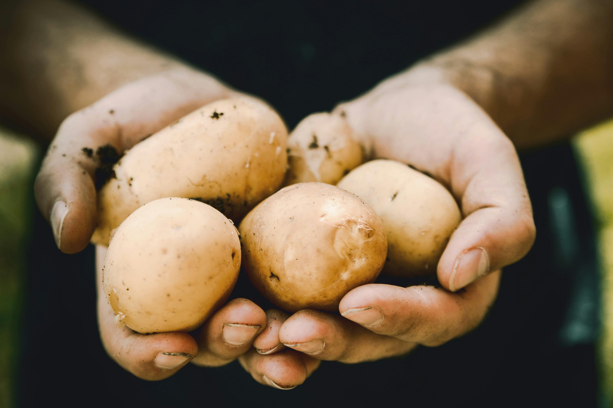
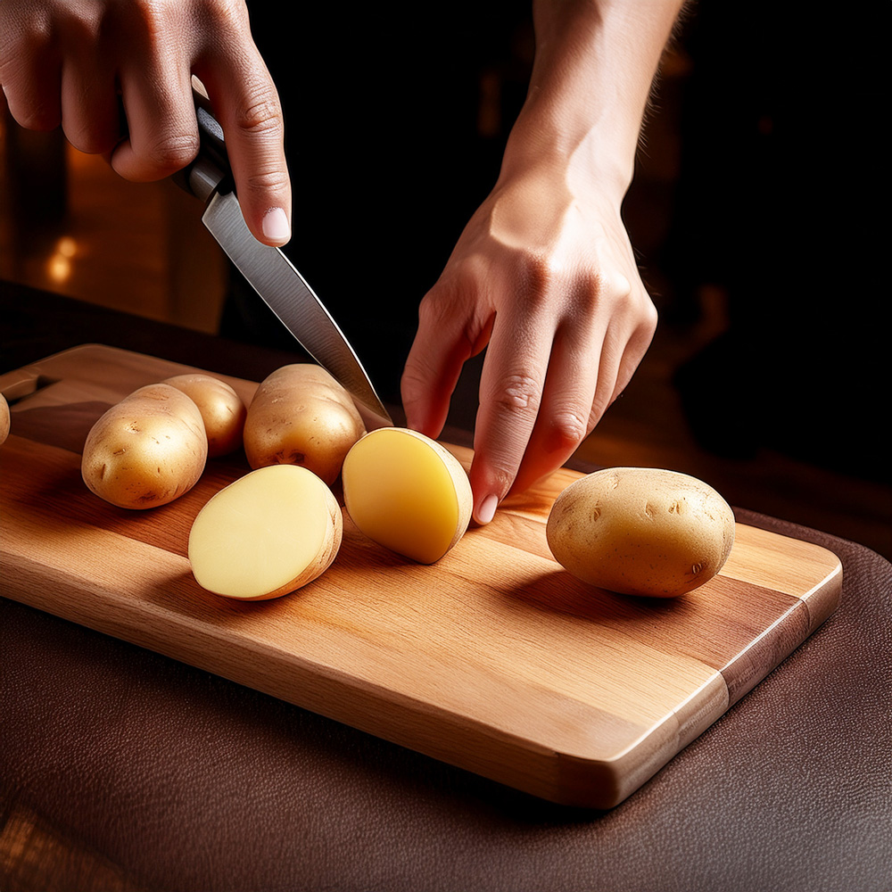

全国の農家から直送された生じゃがいもを店内で丁寧に仕込む専門店「つきぽて」
品種やカット、特製ブレンドオイル、そしてバラエティ豊かな自家製フレーバー＆ディップソース。
揚げたて・あつあつのシズル感とともに、心満たされるご褒美ポテトを
どうぞ、お召し上がりれ
こだわり1
専門店ならではのこだわり製法。
ポテトは、じゃがいもの美味しさを最大限に引き出す太さ10mmのシューストリングカットを採用しています。 特製のブレンドオイルで丁寧に2度揚げすることで、外はカリッと、中はクリーミーな食感になります。 頑張った日のご褒美に、熱々で出来立てのフライドポテトを自家製フレーバー＆ディップソースと共にお届けします。
こだわり2
「つきぽて」では、日本全国の提携農家さんから厳選した国産じゃがいもを直送いただいています。
じゃがいも本来の味と風味をお楽しみいただくため、店内でカットからフライまでを一貫して行い、一般的な大量生産型の冷凍ポテトは一切使用していません。
日本で栽培されている20種類以上の品種の中から、
その時期に一番フライドポテトに合う産地・品種を厳選。作物を育てた農家さんの想いが見えるからこそ、最高の美味しさを皆さまへお届けができます。
店内では、その時期一番の美味しいじゃがいもの品種をご紹介しています。
いつでも新鮮な美味しさと、あつあつのポテトをお楽しみに！

こだわり3

「つきぽて」の味付けは、お店で手作りするこだわりの自家製フレーバー＆ディップソース。
定番の味わいから、自分を甘やかしたい日にぴったりの組み合わせまで、
あつあつのフライドポテト に合うラインナップを豊富にご用意しています。
その日の気分やお好みに合わせて選ぶ、あなただけの「ご褒美ポテト」
一口頬張るたびに心が弾む、特別なひとときをお届けします。